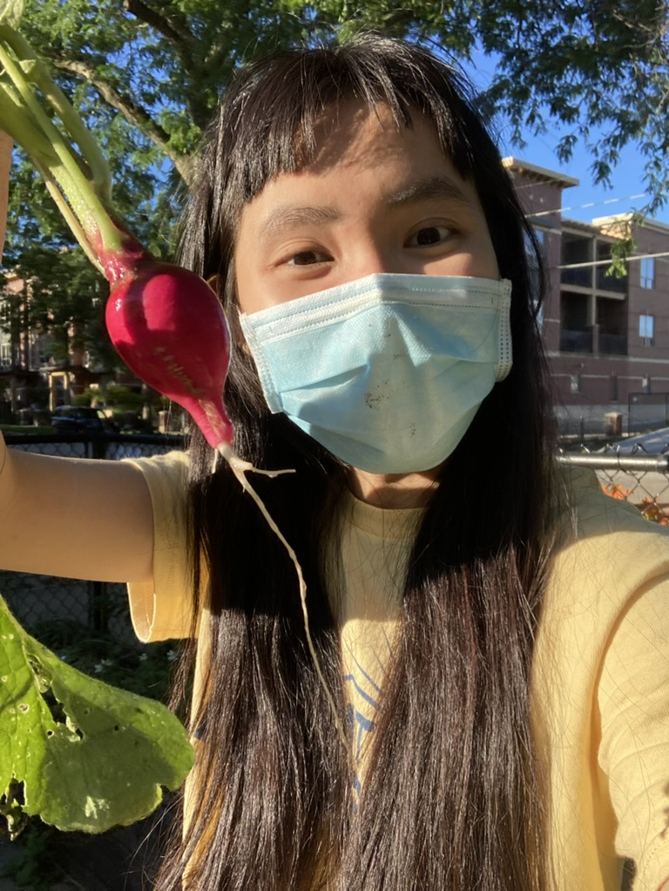

Here are a few of the things I partake in when I have time, in no particular order of preferences:
I enjoy the process of growing something. Would I say I have a green thumb? Possibly not since it takes me several tries for plants not to die, but no matter. I'm convinced that it would greatly benefit us to do things with our hands more often. Here's a picture of me with my first ever vegetable successfully planted. Objectively speaking, I think radishes are quite easy to grow, but I was hugely proud nonetheless.
By and large, this includes things like tabletop roleplaying games and board games, but it also encompasses nerdy habits that often entail rabbit hole divings into random corners of knowledge. I also love reading and watching science fiction and fantasy.
I like dancing, almost any kind. My favorite type is swing and contra dancing. I also enjoy some ballroom dancing, particularly foxtrot due to its fun rhythm.
Another big hobby is cooking, particularly baking. My quest for the perfect sourdough loaf never ends, and it's a rarely deliberated yet much cherished time sink.